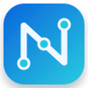

Añade un plano para comenzar
PDF, PNG o JPG · todo se procesa localmente
Página 1
—
0 elementos
Espacio + arrastrar para desplazarte
● Local

PLANIFICACIÓN · INFRAESTRUCTURA · CONECTIVIDAD
Planifica, conecta y documenta infraestructuras técnicas sobre planos PDF o imágenes.